Client Testimonials
Nothing speaks more powerfully than the voices of the families I've had the privilege to support. Click a category below to read their stories.
Birth Stories
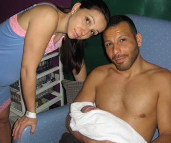Jana
I am forever very grateful for how Laureen helped me achieve this precious gift. She made me and my husband feel relaxed and made him feel empowered to make good decisions. Laureen was respectful and supportive of my choices in childbirth. She ensured that my physical needs were taken care of, such as regular drinks, changes of clothing, cleaning up, and packing bags. I can't thank her enough for the back massages when the contractions were so intense.
Laureen stayed throughout the labour, and ensured I remained calm. Her help didn't stop at childbirth, she continued to be there and help when baby wasn't feeding well, referred us to a lactation consultant, and followed through. Her support, tireless dedication and strength at this important time will never be forgotten by me and my family. She is an amazing person with such a wonderful spirit. I would recommend Laureen's doula services to anyone looking for a positive birth experience.
Louise
For my first baby, I had a medicalised birth, and nearly died from postnatal complications 2 weeks later. I realised I was going to need some extra help to get through my next pregnancy and labour, so I decided to look for a doula and found Laureen. She was so helpful, non-pressurising and confidence building in the run-up to the birth. The antenatal sessions were helpful in reminding my husband and I of how labour works, encouraging us to investigate our options for where to give birth, writing a birth plan and giving us the tools to approach labour differently this time.
At the birth I felt supported and encouraged by Laureen. It was fantastic to have someone there who completely understood and believed in my birthplan. My husband also greatly appreciated the fact that (unlike last time) he felt he could safely leave my side to take short breaks when he needed to. Our baby was born in a birthing pool with just breathing techniques and gas & air - no other pain relief or medical interventions, just as we'd hoped. We owe that in large part to Laureen's constant encouragement and timely assistance - thank you from the bottom of our hearts!
As well as being very experienced, it's worth mentioning that Laureen is also very well networked - she's familiar with the delivery suites at all the local hospitals, she knows many of the homebirth midwives and, although not a medical professional, she understands how the local healthcare system works, which is a big plus, particularly if you need to negotiate permission for a slightly, 'non standard' birth plan! She also runs the Crawley and Horsham Positive Birth Movement group, which I was able to attend antenatally, and found very helpful. I'd definitely recommend Laureen to anyone who needs a bit of extra support to get through pregnancy and labour, or anyone seeking a natural, family-centred approach to childbirth.
Mina
We had been planning to have a family for some time, but I was always scared of the idea of giving birth. When I found out I was pregnant, I was convinced that I would insist on an elective C-section because of my fear. We actually never thought about hiring a doula, until we were introduced to Laureen.
Laureen is an amazing doula, she opened my mind and educated me and my partner on so many aspects of labour - from exercises to ensure the baby is the right position to correct breathing techniques for every stage of labour.
When I think about my labour, I only have positive memories. Thanks to Laureen I was able to fully concentrate on birthing my baby and handle my contractions by using the correct breathing technique and a TENS machine.
I found Laureen particularly helpful during the pushing stage when I felt I was not able to do this any longer. She was a great support for myself and my partner who was very calm and supportive, thanks to Laureen's presence. Laureen gave us the confidence to follow our instincts and I gave birth to beautiful healthy baby!
Looking back, I cannot believe that we had not thought about having a doula before. It was one of the best decisions/investments we have ever made.
Chris
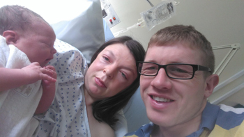We chose to have Laureen as our doula for our second birth and once again it is one of the best decisions we have made. Laureen has been a great pillar of support throughout the birth of our baby girl. It was so great to have the extra person especially as we had a toddler to sort out before hand. Whilst my husband was dealing with my toddler Laureen stayed with me and helped me through my contractions. The constant reassurance that I am doing great from Laureen helped me get through my contractions and give birth naturally without any interventions and painkillers. I am so glad that we chose to have a doula and that being Laureen who is absolutely caring and gentle made it worth it.
Hannah, Ben, and baby Talitha
Right from the first antenatal meeting with Laureen I began to feel more positive about the upcoming birth of my second child. She explained ways I could start preparing even two months before the birth. Then, when contractions started it was great to know I could call someone as soon as I needed. She was immediately reassuring when she came and helped me stay active throughout. She got me in effective positions in labour and she did amazing massage, which was helpful in relieving pain. Crucially she also showed my husband how to help me with massage and positioning, which made for a much better experience than labour for my first child, when I felt very alone. The emotional support of having an experienced, warm, kind woman, who was totally FOR ME, alongside to encourage me was so important and very reassuring.
In the hospital Laureen's encouraging words definitely helped me to keep going despite the exhaustion. I would probably have needed the small intervention sooner if it hadn't been for Laureen telling me I could do it. In the end I felt I had done my absolute best and was left with no regrets about the birth.
Not many women know how to labour effectively and Laureen was good at explaining and helping me do just that. I'd especially recommend her to women who had previous disappointments or a difficult labour and want a more positive experience second time round.
Lexi, Guy and baby Tabitha
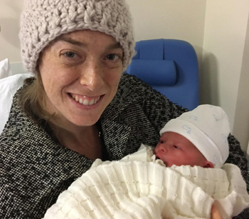When I fell pregnant with my fifth (and last) baby we decided that this was going to be the best birth experience yet! I'd always had relatively straightforward births but suffered from fear and panic attacks when I thought about going through labour again. We also thought my husband would have to be at home during the birth looking after the other children as we have a distinct lack of family to help us. So we looked into engaging a doula, and chose to meet Laureen. Well, from the minute we met I warmed to this lovely lady. Lacking a mum or sisters I knew that I could trust her to be a positive female presence during a time of such vulnerability.
One moment I distinctly remember through the haze: I was screaming for an epidural while Laureen was quietly and calmly reassuring me that I didn't need one. As I became quite determined indeed, I heard her telling the midwife confidently that I was, in fact, in the transition phase. Somewhere deep within me I knew Laureen was right and that the baby would come soon without intervention. She was indeed spot on! Baby Tabitha needed a little (manual) help to come out, but very soon after my adamant demands for pain relief she was safely here.
I'd suffered three times before with depression and anxiety after my births; this time I was flying high with confidence, joy and energy!
So to conclude I must express my one regret - that I hadn't known Laureen for my previous births. She did a really great job. Thank you Laureen!
Sarah, Wayne, and baby William
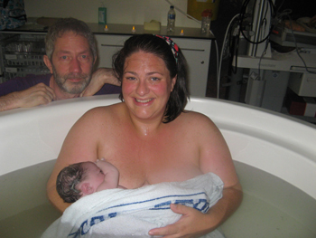Thank you Laureen for being our doula for the birth of William. During my pregnancy, I had heard many stories from friends, acquaintances, and in the media of difficult birth experiences, and so I was feeling rather nervous in the run up to labour. I knew that I wanted a third person with us to help us feel calm and safe, and to guide us through. Laureen did just that. On the day, she came to our house and was a reassuring background presence as the contractions got stronger.
Once in the hospital, I progressed quickly and ended up spending most of the labour in triage without a midwife present. It was extremely positive to have Laureen with us to ensure us that things were progressing as expected. Her presence was invaluable during the pushing stage when things became rather intense. She helped me to calm down my breathing so that I could push effectively, She then took some beautiful photos after the birth and helped me to get settled in the post-natal ward. I would recommend Laureen to add calm and reassurance to your birth.
Anna, Steve and baby Etta
I had a very medicalised and traumatic birth with my first child, and when I became pregnant again I decided to put the birth to the back of my mind and not think about it, as it was such a long way off. At 37 weeks I started to panic and then began to look into hiring a Doula. I was fortunate that Laureen was available.
From the first meeting I felt more confident. On the day of the birth Laureen was amazing, she gave me constant encouragement and didn't leave my side once. She was able to completely understand my birth plan and make sure I stuck to it. I gave birth to a beautiful baby girl, using just gas and air. I was able to have the natural calm birth I wanted. Without Laureen I am not sure this would have been possible. Thank you Laureen.
Loveth and baby Jaden
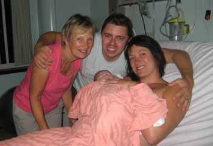Laureen is an amazing doula! Without you I just don't know how I would have gone through all of this, especially as my mum wasn't here. You were always there when I needed you. On that night when I was having contractions the lower back massage that you gave me was so helpful that I didn't really feel the pain; you also helped me to relax and breath. I was so lucky that I didn't have to go in an ambulance because you took me in your car and I felt more comfortable. Even after I had given birth you helped me get Jaden latched on and also helped me have a shower. You took so much care of me. It was amazing, you were just like a mum to me. Thank you so so much for everything.
Shelley, Darren and baby Lewis
I'd like to say how much I appreciated having you at the birth of our baby boy. Although I was initially unsure about having someone outside the family at the birth, I have to say that I would not hesitate to recommend the help of a doula to anyone, especially anyone feeling uncertain or afraid about giving birth! Your massage was amazing and really helped to ease the pain. Your advice about relaxation and breathing - and your knowledge - is invaluable and you definitely provided alternative support to that of my husband and mum. Thank you so much for being there for me. I know my husband was relieved you were there to support me 100%, even after the birth when he needed to be with the baby in the special care unit.
Dipal, Chirag and baby Viyan
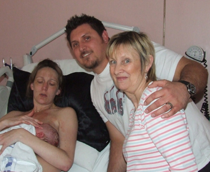Well, where do I start?! Laureen has been absolutely wonderful from the minute we met her. Laureen is a very down-to-earth and honest person who gave us the best advice and support we could ask for. We were very determined to have a natural birth and Laureen made that possible for us. She was there every step of the way and made sure we weren't forced to do something that we didn't want to. We can look back at the birth of our baby boy and remember it with a smile on our faces.
Nicole, Andy and their baby Taelynn
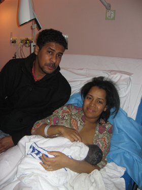The word Doula originates from the Greek and it means female helper, but I believe a far better fitting description of Laureen would be 'Pain absorbing Birth Mother'.
This is my special journey guided by my special Doula: On the 21st of March I gave birth to my bundle of joy without pain relief or medical intervention. My journey began a long time before this date however and I surely would have been lost without Laureen. Laureen prepared me for the birth, labour and the difficult few weeks following the birth. She was always available for a chat if I felt insecure about something and had excellent advice with heaps of comforting words. I also took breathing techniques with Laureen which I highly recommend, she taught me to breathe through almost any pain, not just childbirth, and I focused on her the whole way through the birth. Laureen taught me that birth and pain are all a mind set which can be overcome if you know what your body is capable of naturally. I also recommend the read of one Laureen's books called A Guide to Spiritual Birth by Ina May Gaskin - do make time for this book before your birth!
If you want to have a natural birth that you wish to remember as being perfect not painful, Laureen can make your wish come true.
Jamie and Ram with baby Esther
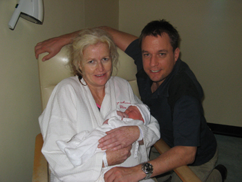Laureen taught me relaxation, breathing techniques and exercises during my pregnancy. The exercises were very good in keeping me supple and I practised the relaxation and breathing techniques, as I intended to use them during labour without any other pain relief. I felt more equipped to birth my baby after attending these sessions and very well prepared. At the birth of my baby I used the breathing techniques throughout labour. They really helped me through the contractions, so I did not need any other pain relief. I was also very relaxed during the birth. I am so glad Laureen taught me these techniques as they really helped me.
At the antenatal sessions Laureen prepared my husband and I extremely well for the birth of our baby, so my birth experience was more than I ever expected. I have three children and this was the first time I've had a doula. This time I really felt in control and more confident. I can definitely say this was my quickest and easiest delivery. I am so thankful to my doula Laureen.
I would recommend that pregnant women have a doula, as mine helped me so much.
Mum, Ian and baby Charlotte
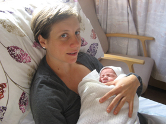Charlotte was born on the 17th October 2009. Ian and I wanted to say that the experience was really enhanced by having our wonderful Doula Laureen. As a doula she really made us feel relaxed and in charge of our own destiny. Through her constant reassurance I was able to focus on achieving a natural birth and gave birth to a beautiful baby daughter weighing 8 pounds 10 oz. Thanks Laureen!
Sally with baby Esther
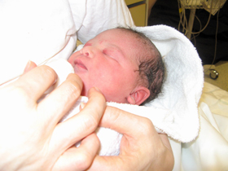We felt lucky the birth went as smoothly as it did being our first baby. The support given was invaluable; knowing Laureen was always beside me as well as my husband. She helped prepare me and get me through the stitches as well as helping me with the breathing and being an encouragement throughout labour and birth.
Zsusa
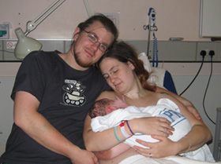Laureen answered all my questions and went over some breathing exercises. She is very personable, friendly, caring and knowledgeable. Laureen was so thorough in preparing me for the birth and I found the antenatal sessions extremely useful. I think learning breathing techniques really helped during labour and birth. I didn't need any pain relief this time. Laureen was a great support to me and my family during and after the birth. She was just great and I would recommend a doula to anyone.
Sam with baby Oein
It was like having my Mum there. Laureen has lots of knowledge and experience. She has insight and is very positive.
What Partners Say
Marco
When my partner suggested that we have a doula I agreed that we needed someone with us who had plenty of experience. Laureen exceeded our expectations. The antenatal sessions were really helpful. Having someone come and explain everything to us was exactly what we needed. The birth of our baby was much better than I had expected. Time went really quickly and the whole situation felt calm and under control. I was able to help my partner in many ways as Laureen had explained to me. Her experience and knowledge helped us make better decisions than we would have done if we had not been so well informed. I would definitely recommend having a doula to other Dads; in fact I have already done so. Laureen's care, knowledge and experience far outweighs her fee.
Paul
When my wife suggested we hired a doula I thought - brilliant! I knew I could really do with the extra pair of hands. We had used Laureen before and she met our expectations again. The antenatal sessions were helpful as they helped me with what and how I could help my wife, for example back massage and how to use the Rebozo. It was so useful that she was able to stay with my wife while I dropped off our son to my parents before going to the hospital. Labour was quicker than I expected and Laureen was great in creating a calm relaxing atmosphere and ensuring my wife was relaxed. Having Laureen helped me take part in the birthing experience and be of help to my wife. Laureen provided me with sound advice and knowledge which I was able to relay to the midwife when we had to make important decisions. I would definitely recommend having a doula to other Dads.

Makokha and baby Sophie
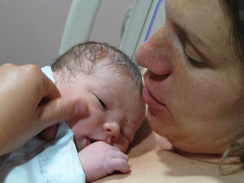Thank you for supporting my wife as her doula at the birth of our fourth child. We hoped it would be a short, easy labour, as with our other children (now teenagers); but how wrong we were. Christine could not have done it without you through her long labour, which left her so weary and exhausted and ended up with a caesarean operation, as our baby would not descend due to her cord being wrapped round her neck and also there being a knot in it.
Thank you for being with her in theatre. I am so grateful you never left her side.
You went the extra mile of visiting numerous times and supporting her after the birth, when I was thousands of miles away, with nobody to cheer her up. Thanks for the great work.
Nuno, Liliana, and baby Gabriel
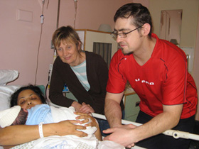My name is Nuno and when my wife got pregnant we decided that we where going to take Laureen's classes to help prepare us for the birth of our son Gabriel. I must say that at first I didn't think that it would make a big difference. I could not be more wrong. The classes made a huge difference. I don't think that my wife would have been able to do everything she did without Laureen's help. The classes where very thorough and like I said before, they where very helpful. We could not have done it without them. Thank you once more Laureen.
Nigel, Gail, with baby Michael
Thank you Laureen for keeping Gail calm throughout the whole labour.
Support for Single Mothers
Jane
I am so pleased I used Laureen as my doula. It was especially important to me as a single mother and one not having family around. She took such good care of me and I did not have to worry about anything so I could concentrate on birthing my baby. Laureen also helped with pain relief using massage and rebozo. It was so good to have someone with experience around to help.
Loveth and baby Oghosa
Laureen is an amazing doula! I met Laureen after a friend introduced her to me just a few weeks before my baby was due. My friend thought it would be a great help for me to have someone with me at the birth of my second child, as I am a single mum. Laureen was the right person!
I was so grateful to have Laureen's calming presence, especially when I had to make an important decision. She listened carefully to me and answered my questions so I was able to make the right decision.
Breastfeeding Support
Jess
Having had a very negative experience breastfeeding my first child, I knew that I wanted additional support postnatally with my second child. Before George was born Laureen visited us and gave us lots of useful information about breastfeeding. I loved the focus on biological nurturing in particular. Once George was born, she was available to come over straight away.
I struggled to feed for several days, but Laureen was always a calm presence, offering practical suggestions without being pushy.
Laura
Before the birth my expectations of a doula was that they would provide emotional support and guide me through my contractions and assist with positions etc. Laureen met those expectations. However, I received much more than this. I wanted a low intervention birth and ideally without an epidural and she advocated natural labour and, to my amazement, I managed labour with only a little gas and air! I also found our session about breast feeding really helped me especially in the very early days after my baby was born. I felt I persevered more because I knew that it might be hard to begin with but that I could get through it. These are just a few examples of how my ante-natal sessions served me but I would recommend them to anyone as I feel that the more you are informed the better prepared you are for any eventuality!
Zara, Simon, and baby Octavia
Laureen was brilliant from the start. She answered my phone call and talked me through the services she offers. She was so friendly. When she came for our antenatal meeting she had so much information about labour, birth and breastfeeding, which put our minds at ease. We both really enjoyed her two sessions as she gave us so much insight into the wonderful labour. I found it was so helpful to practice the breathing and getting into the different positions she showed me for labour and giving birth.
Laureen helped with latching on and breastfeeding from the beginning. She also helped me have a bath and then dress my daughter with my nervous and overwhelmed husband. She came and visited us three times after the birth, reassuring us and answering our questions.
Home Birth Experiences
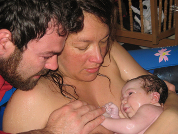Isabelle and Dan with Josephine
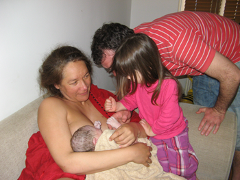Laureen was incredible during my birth - calm, experienced and very knowledgeable. She made me feel safe and strong. Laureen also massaged my lower back, which was extremely good of her and it helped me a lot so I could deal with each surge. I would not hesitate to recommend Laureen.
Isabelle, Dan, Josephine and baby Maxim
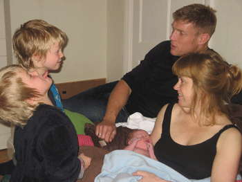Laureen was our doula for the second time last May and yet again she was truly amazing. She keep me and my husband calm and level headed. I don't think I would have had such a successful home birth without her. She guided us through what would have been quite a difficult birthing experience and also helped us with our three year old daughter Josephine who attended the birth of her baby brother. We will never forget what she did for us as a family. Thank you Laureen.
Nancy and Tecwyn with their boys Rudy, Sid, and baby Vince
After my very calm and gentle homebirth with my second son, I felt certain that I could cope with having my third baby at home in much the same way. I wanted the help of a doula initially for practical help, we have 2 other children and no family nearby. However my third birth was very different from the second, it progressed very rapidly and very suddenly. Laureen arrived to find me in active labour. I was beginning to feel a little out of control and she helped keep me calm, reminding me about my breathing techniques and relaxing my shoulders; she really helped me cope with a very fast powerful birth. Meanwhile my husband was busy getting the birthing pool ready as fast as he could! During the third stage of labour Laureen made sure I kept drinking, I didn't even need to ask she just knew what I needed. She was looking after me while the midwife was making sure everything was okay with the baby. From the moment she arrived until I was tucked up in bed with my baby Laureen's contribution was invaluable, she looked after me with kindness and sensitivity. Her visits the following week were a great help too!

Anna, Robert and baby Elizabeth
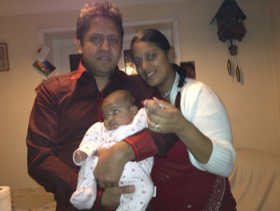Laureen was a wonderful calm presence during the birth of our daughter. She ensured that we had the gentle water birth at home that we wanted and helped us both with preparations to achieve this. She was reassuring throughout my labour and her back massage really helped to ease each contraction. Laureen was calm and knowledgeable even when our daughter arrived before the midwife! We are so glad she was there to support us.
Dharmendra, Niku and their baby Tanisha
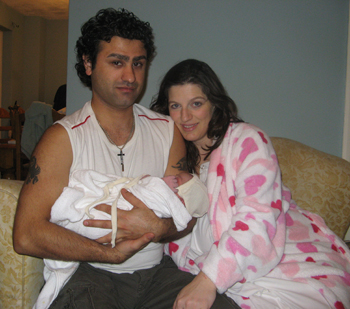We wanted a doula as we were keen to have a home birth and felt that having Laureen with us would be helpful towards this. First Laureen gave me and my husband one-to-one antenatal sessions, where we heard essential information which was not mentioned at NHS classes. Laureen gave us lots of forward planning suggestions, which we would never have thought of. Laureen was amazing, not only during my labour, where she will helped me with breathing techniques, back massage, positions and with reassurance through what was happening to me, but she also cooked and washed up and offered to do anything in the house. I had to transfer to hospital, but Laureen came and supported me there. She stayed with me the whole time I was in labour. Laureen is worth every penny. Thank you very much Laureen. I couldn't have done it without you!
Joanne, Eros and Beritan
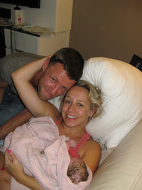I had a doula because I have 5 children and of course was not sure of the time of day I would have my home birth. In addition the NHS policy means you get a random midwife who may or may not be on board with your birth plan and I preferred to have a matriarchal figure with me who could be a good advocate for me.
I do not know how I would have managed without my lovely doula, Laureen. She just got on with everything and was really helpful yet not intrusive during the birth. She was calm and sanguine and a God send after the birth as I tried to juggle everything.
It was good to have someone looking after your needs from water to cold flannel to homeopathic remedy and helpful suggestions, yet not intrusive just quiet and calm in the background - supporting.
After Beritan's birth she was a great to help with all the practicalities such as looking after me (for example making me tea and making sure I drank enough!), holding the baby while I saw to myself, caring for the baby so that I could eat. Laureen also helped by getting the baby to sleep.
It was great to have domestic support, essential even. I would have drowned under the weight of everything otherwise and been very stressed.
Christine and James Grant with Amy
Laureen is an amazing doula. Both my husband and I can attest to Laureen's ability and knowledge. Her presence during the birth of our daughter was a tremendous help. This was our fourth pregnancy and second homebirth and after the 1st homebirth I knew I would want to have an experienced and encouraging coach to help me along the way. Laureen was very professional and nurturing throughout the labor and delivery. She was quick to suggest laboring positions and to ask questions and make suggestions that were in my best interests and was a great cheerleader in moments where I thought I would not be able to deliver the baby. Thanks again Laureen!
Caesarean Birth Support
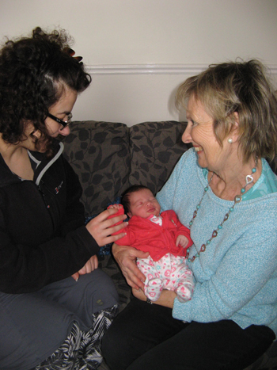Daniela, Chris, and Oriana
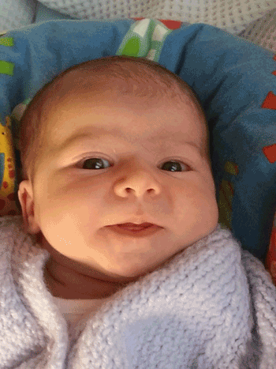Having Laureen as our doula prepared us so well for the birth and immediate aftermath. Pre-birth, Laureen was calm, gave us lots of info and guided us when we asked for it. She also recommended we prepared a few birth plans to cover different scenarios which was a great way to prepare us for the fact that labour and birth does not always go to plan! It was very fortunate we did this.
During the labour, she supported me brilliantly, massaging my back and told me a wonderful breathing technique to help me during the most intense contractions. Having her there also meant I knew my husband wasn't having to do it all himself, I could be as demanding as I needed to be without it stressing him out!
When I had to have a c-section, Laureen reassured me that I had done all I could in the circumstances. Because I was feeling so vulnerable at that time, her reassurance was vital to my mental well being. This really helped me feel positive. When the baby was born, she helped the baby find the breast and I really do think this very early intervention has been the reason breast feeding has been so natural, straight forward and easy for me and baby.
Laureen was very gentle in her approach and I would not hesitate to use her again.
I would also thoroughly recommend the placenta smoothie! My recovery was swift, my energy was high and I had no baby Blues- all of which I attribute in the main to the placenta smoothie. And no, you can't taste it! It is refreshing and just what you need after birth!
Rachel and Ian
I want to say thank you to Laureen for being my doula. From our first meeting I knew she was the calm, strong-minded, level-headed person I would want at my birth. She has a lot of experience and I knew I was in safe hands. In the end I had an elective c section due to a previous shoulder dystocia. Laureen spoke to me of positions that might help to prevent a shoulder dystocia, and gave me information about a previous birth she attended where the mother also had a previous dystocia. However she did not pressure me to abandon my plans for a C-section. It was clear she would support me whichever option I chose. I appreciated Laureen's calm presence at my c section and would recommend her to anyone considering using a doula. Laureen's character and experience is rare and invaluable.
Postnatal Support
James and Susann
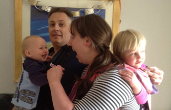Laureen came to assist me at home for a couple of weeks, soon after the birth of our baby daughter. Having the extra pair of hands around the house was invaluable and really helped my husband and I cope much better during those early days. Laureen was a great help to us. She was calm and attentive and was equally as helpful around the house, as she was with our baby daughter or toddler son. Laureen was also very reassuring with her knowledge on any questions my husband and I had regarding our young baby.
Amelia, Rory, Jasmine and baby Angus
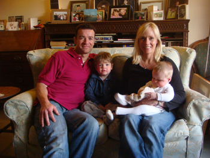Laureen has been a great support to our family for 9 months after our baby was born. During pregnancy, I was very tired, especially towards the end. When I rang Laureen, I was only a few days away from giving birth but she was able to make herself readily available and come and help us.
Laureen came every week for several months giving me time to focus on my baby and my 3 year old. Laureen is extremely reliable and professional and will gladly turn her hand to any task. She would hold and calm my baby while I had a shower. The baby would happily fall asleep on her. Laureen provided us with so much support and I am so pleased we chose her as she is a very calming presence and a natural homemaker. Thank you Laureen!
Pippa, Sim, with Zebedee and baby Digby
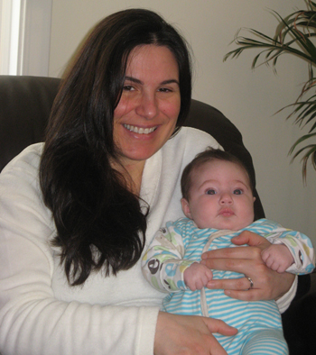Laureen supported us as a family since our baby was about 2 weeks. Her main role was to support me with my other son and with chores which allowed me time to breastfeed the baby when my husband was away with work. She was very skilled in getting my 2 year old up and dressed even when he was being difficult and this allowed me to breast feed the baby before taking my son to nursery. I then left the baby with Laureen, to burp him and give a bath. She has also helped me in the evening playing with my older child, giving him a bath, getting him ready for bed and reading him a story. She has a calm and gentle manner which both children have responded very well to. She instinctively knew what needed to be done.
Laureen gave me support and ideas when I had an odd rash and when was struggling with milk supply in the evenings. She also contacted the forum for me to ask others for their ideas.
Laureen has been a huge help at the moments Ive most needed support and she has been very flexible in when she is happy to come to support.
Mrs M and Baby
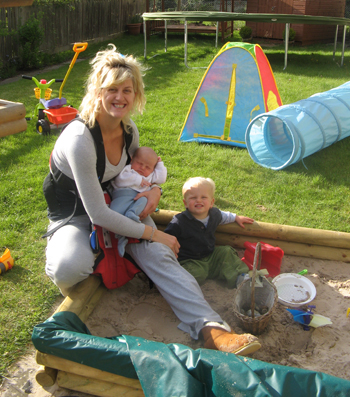I had Laureen for post natal support. We just clicked when I invited her to my home to meet up and I knew she was the right person for us. I found my doula was absolutely fabulous. For me she was perfect. Laureen listened carefully to what I wanted for my baby while I was taking a rest and did exactly what I asked her. She actually did more than required. She followed up on some concerns I had over my baby's sleep. She also helped me with some household jobs which were perfectly carried out. My husband felt extremely happy that I found the help I needed and was very relieved when away on a business trip knowing someone so kind and experienced like Laureen was looking after his girls. She is an experienced doula and a very kind and gentle person. I could not have found a better person. I feel it is sometimes easier to receive help from a person like a doula rather than parents/in-laws because she give the exact help one needs without conveying in the feelings grandparents might have.
Dolly with baby Barnie and Samuel
Laureen came to me when I was 38 weeks pregnant with my 2nd child. I was exhausted. She was so helpful, she asked me for an upfront lesson in all my appliances so that she could get on with them, the oven, dishwasher, washing machine etc, which meant I could throw anything at her so to speak and she could handle it. She was amazing with my little boy, she often took him to the park, he really warmed to her which was a relief because he was normally quite clingy. When my baby was born, Laureen was great at winding the baby whilst I was with my older boy, and looked after them both at times, so that I could have a bath! It was a real break and she felt like a friend rather than someone I was employing.
VBAC Success Stories
Guha, Kannan, and baby Vignesh
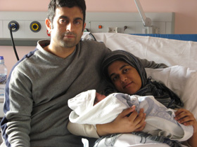Laureen was a pillar of strength and support for me during the birth of my second son. Having had a traumatic emergency cesarean birth for my first son, I was very keen to have a vaginal birth for my second son. My first baby was posterior. Laureen's suggestions and exercises during my second pregnancy helped maintain my baby in the proper position. On the day when I was in labour, she arrived at my home very quickly once I messaged her. She was highly professional and helped my husband and me remain calm throughout. She massaged my back during every contraction for almost 9 hrs. She reminded me to breathe throughout labour and helped me have the water birth that I wanted, constantly encouraging me at times when I was almost about to give up.
After the birth she even helped me have a shower and was more like a mom. I don't think the birth would have gone so smooth without her guidance and help. She was a guardian angel. Her experience and professionalism is worth having. I could not have done it without you, Laureen.
Fatima with Husband and baby
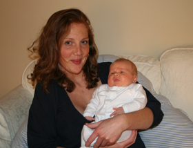Laureen was very helpful beforehand by lending me books, finding out information and searching the web. She helped me think about what I wanted in my birth plan and taught me some exercises and breathing techniques. She was very positive and encouraging as I wanted a VBAC and I was hoping for a shorter labour, as my previous birth experience was 48 hours. Laureen prepared me well for the birth. At the birth she was very encouraging and helped me with my breathing. She massaged my back and guided me through my first vaginal birth, lasting only 4 hours, making it a positive and good experience. After the birth she was very helpful, insightful and able to answer questions about the birth. She also provided us with a beautiful birth story.
Her strengths are her age, experience, her calm nature and her encouraging self.
Labour can be difficult and frightening but having someone there for support, who has been there before, is very comforting.
Sarah with Elsie
I wanted a doula with me for the birth of my second baby as my first birth had been quite traumatic, ending with a C section. This time I wanted to feel more in control of my birth experience and felt a doula could help me achieve the birth I desired. Laureen prepared me very well, covering everything I needed to know. I was well informed about my options and choices. I certainly felt having Laureen with me was helpful during the birth of Elsie as I felt safe and supported and much more in control than I did during the birth of my first baby. I was overjoyed that I had a VBAC (Vaginal Birth After Caesarean). I have been recommending having a Doula to my friends because so many women feel frightened of the prospect of labour or are either traumatised or feel a failure after previous labours. I would consider having a doula for my next birth as I would like to feel safe again, like I had a 'sane' brain by my side who knows what kind of labour I want and can help me achieve it.
Birth Preparation Sessions
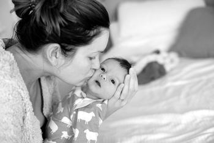Sam, Dave and baby Ruben
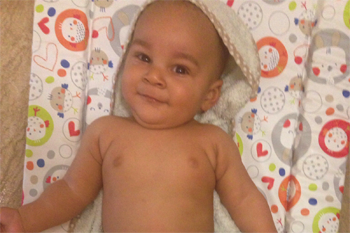Laureen taught me and my husband some great breathing techniques to help me through labour. As it turned out, the birth didn't go to plan (does it ever?) and as a result I had a difficult labour and birth without any pain relief. I totally relied on the techniques learnt from Laureen and they helped me cope with the experience. I was able to manage the pain while keeping calm and focusing on my breathing. Laureen gave me the positive tools/techniques that I needed to keep motivated during labour and I'd definitely recommend working with her.
Bonnie and Wise Mlalazi and baby Josiah
Before the birth, I worked on getting the baby into the ideal position every day using what I learned! This definitely paid off. Once my labor started, I practiced many of the positions we'd discussed. It was especially helpful to walk around a lot, push against things, take a bath, and lean on my birthing ball. These strategies Laureen had shown me enabled me to cope with labour at home for a long time, so by the time I got to the hospital I was nearly finished! I remember really working on my breathing in the car, including using my song - I think we hit every possible red light!
Doing the sessions with my husband was wonderful; when the time came, he reminded me about my breathing and really encouraged me to stick with my birth plan, reminding me of why we wanted a natural birth and encouraging me to keep moving through the contractions to make things easier. We both felt shocked by the intensity and rawness of labor, however we felt thoroughly informed. We knew what we wanted and we knew what to expect in terms of progression, procedures, how the hospital was likely to handle things, etc. Also as a result of the sessions, we made sure to let the cord finish pulsating before cutting it, and prioritised skin-to-skin contact as soon as possible, which I feel was so valuable for our son. When we got home I felt confident to enjoy a "baby moon" and spend the time bonding with Josiah, which I am so thankful for now that I see how quickly the time flies! Thank you for being such a positive and encouraging part of our journey into parenthood!
Ready to Experience This Support?
If you'd like to join these families in having a positive, supported birth experience, I'd love to hear from you.